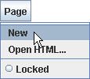 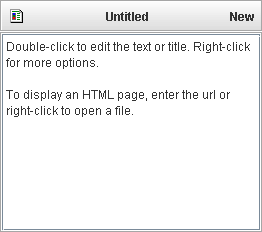
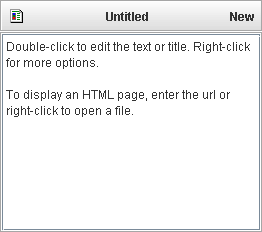
Pogled
na stran
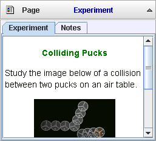
Pogled na stran prikazuje tekstovne in html datoteke. Vsaka stran ima naslov. Več strani je organiziranih v zavihkih.
1. Tvorba
strani
Za prikaz menuja kliknemo na gumb Stran in za tvorbo nove strani izberemolect Nova. Takoj se prikaže nova stran in njen naslov. Privzeto je naslov "Neimenovana", besedilo pa je kratka skupina navodil za urejanje.
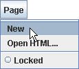 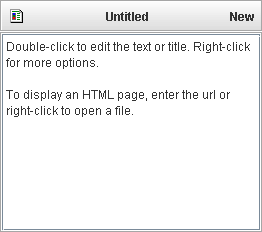
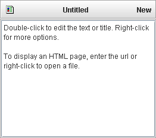
2.
Postavljanje naslova
Naslov spremenimo tako, da dvokliknemo na trenutni naslov ali z desnim mišjim gumbom kliknemo na stran in v spustnem menuju izberemo Postavi naslov. Prikaže se pogovorno okno s trenutno izbranim naslovom v tekstovnem polju. V polje vtipkamo nov naslov (med tipkanjem ozadje porumeni) in pritisnemo tipko Enter.
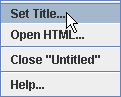 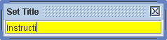
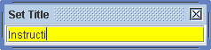
3. Urejanje
besedila
Za urejanje besedila dvokliknemo na stran. S tem avtomatsko izberemo trenutno besedilo.
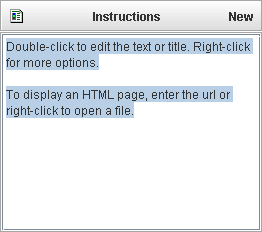
Med tipkanjem besedila ozadje porumeni, kar pomeni, da sprememb še nismo shranili. Po zaključku sprememb vnesemo besedilo s klikom shift-Enter (pritiskom na tipko Enter, medtem ko tiščimo tipko shift) ali kliknemo kjerkoli izven strani. Opomba: tsamo tipka Enter key (brez tipke shift) ne shranjuje besedila, pač pa le začne novo poglavje.
4. Prikaz kot
dokument HTML
Za prikaz dokumenta HTML vnesemo kot besedilo pot do dokumenta. Pot lahko kaže na datoteko na lokalnem računalniku ali na oddaljenem strežniku.
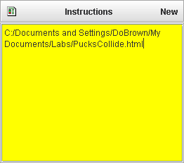 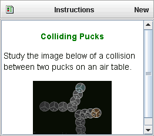
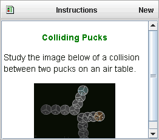
Za lokalne datoteke lahko na menuju strani izberemo tudi Odpri HTML... , nato pa na standarden način odpremo stran.
 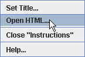
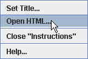
Za datoteko na oddaljenem strežniku mora pot vsebovati tudi url protokol ("http://") , kot vidimo spodaj. Enostaven način vnosa pravilne poti je, da s spletnim brkljalnikom gremo na datoteko in naslov prekopiramo kot besedilo strani.
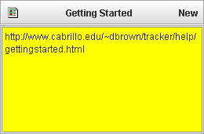
5. Razveljavi
in obnovi
Za razveljavitev ali ponovno obnovitev sprememb besedila kliknemo z desnim mišjim gumbom na stran ali jjen naslov in izberemo ustrezno postavko v spustnem menuju, lahko pa uporabimo bližnjice s tipkovnico CTRL-Z (razveljavi) ali CTRL-Y (obnovi). Opomba: postavka za razveljavitev v spustnem menuju je na voljo le, če smo besedilo spremenili, postavka obnovi pa le, če smo kakšno spremembo razveljavili.
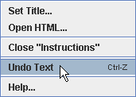
6. Zapiranje
strani
Neko stran (na primer stran "Navodila") zapremo z desnim klikom na stran ali njen naslov in nato v spustnem menuju Zapri "Navodila".
7. Zaklepanje
strani
Zaklepanje strani preprečuje spreminjanje njene vsebine ali naslova. Stran lahko zaklepamo na dva načina: